THE MACRO SCREENS · SLIDER, YIELD CURVE, AUCTIONS, MACRO PRINTS, PUT / CALL
7 Oct 2026 · everything is on branches · nothing is deployed, no table was created, nothing on your Hub or Station changed · Hub hub/hm2-macro-20261007 · Station station/hm2-putcall-strip-20261007 · put/call writer ibkr/hm2-putcall-names-20261007 (repo scintilla)
1 · THE ECONOMIC SLIDER
“we don’t have in the economic section a left to right slider like we have on the event section … I think we should”
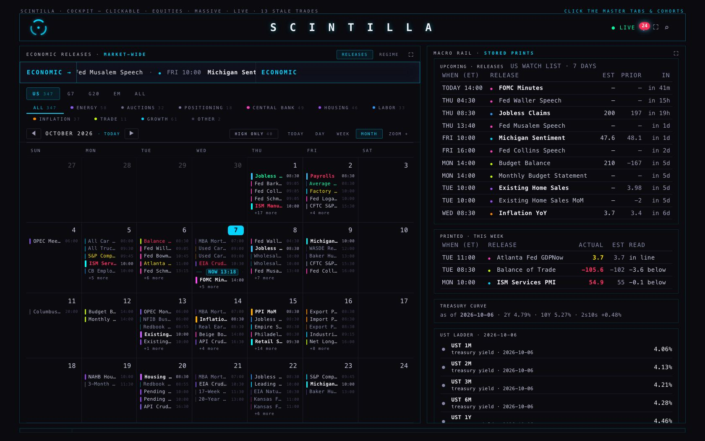
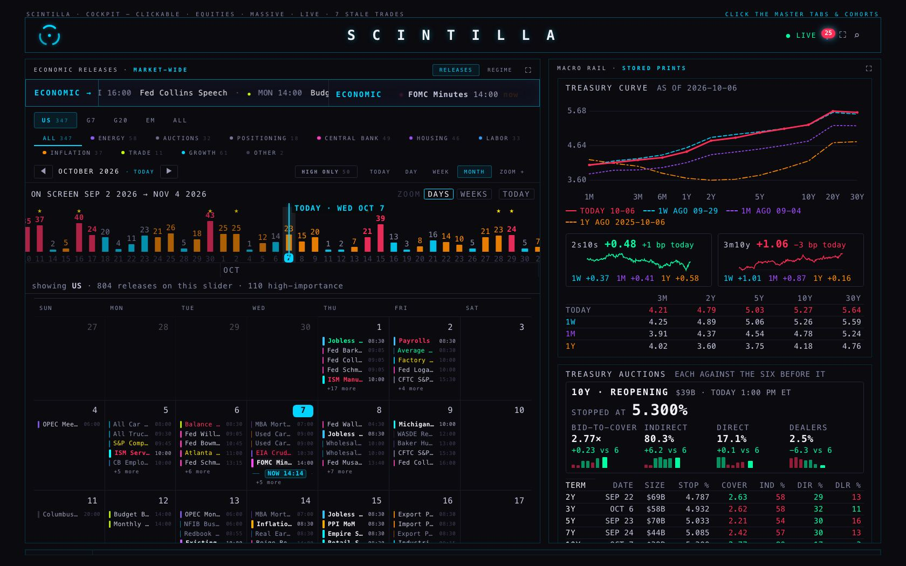
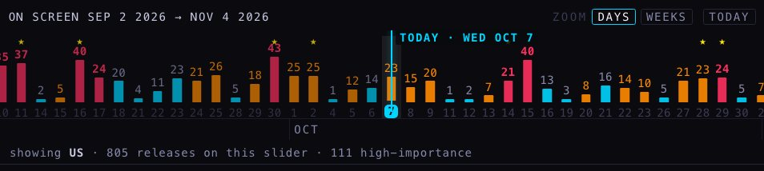
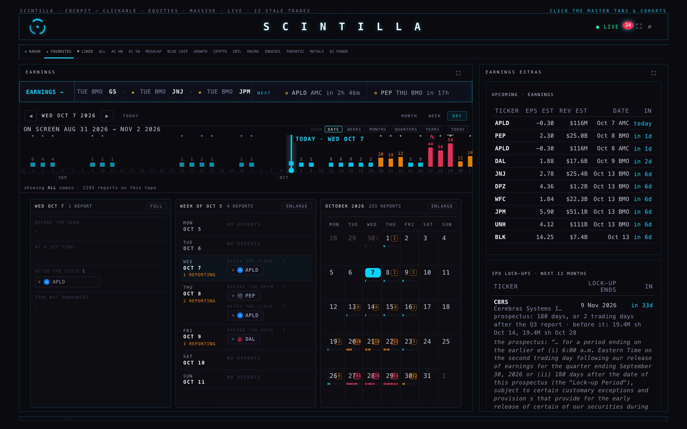
- What a bar counts. The releases of that day that pass the tabs above it: the region (US, G7 …), the category chip and HIGH ONLY. Change a tab and the slider follows; it never disagrees with the table under it.
- Its colour is the day’s load, as on the earnings slider. Cyan: no high-importance release. Orange: one to four. Red: five or more. This was measured, not chosen by eye: of the last 190 US weekdays, 84 had none, 83 had one to four, 23 had five or more. So red is about one day in eight.
- DAYS shows five weeks back and four ahead. WEEKS shows six months back and two ahead. There is no MONTHS: a month of releases is nearly the same number every month, so the bars would all be the same height.
- Drag it sideways, or tap TODAY to bring it back. Click a bar and that day (or week) opens in the table below.
2 · TREASURY AUCTIONS
“There’s a … 10-year note auction … should we be tracking that? … how much they fill or what? What information do we get … or do we just get that the event exists?”
The calendar only told you the event exists. The Treasury itself tells you how it went, free, about three minutes after the 1:00 PM deadline. Three things, and each one is shown against the last six auctions of the same term:
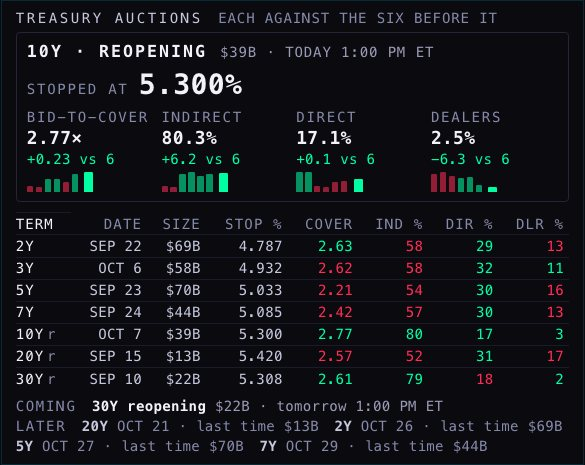
| WHAT | WHAT IT MEANS | TODAY’S 10-YEAR | ITS LAST SIX |
|---|---|---|---|
| Stopped at | the highest yield the Treasury had to pay to sell all of it | 5.300% | — |
| Bid-to-cover | dollars bid for every dollar sold. Higher is more demand. | 2.77× | 2.54× |
| Indirect | mostly foreign buyers and big funds, bidding through a dealer | 80.3% | 74.1% |
| Direct | domestic funds bidding for themselves | 17.1% | 17.0% |
| Dealers | the banks, who must take whatever nobody else wanted. Lower is the stronger auction. | 2.5% | 8.8% |
All seven terms are on the card: 2-, 3-, 5-, 7-, 10-, 20- and 30-year. The newest result of each is one line. Recent ones were softer than today’s: the 5-year on 23 Sep was covered 2.21 times against 2.33 and dealers took 15.8% against 12.9%.
Upcoming, with size. COMING lists what the Treasury has announced: tomorrow’s $22B 30-year reopening. The Treasury names a size about a week ahead, so further out the date is known (it is on the calendar) and the size is not yet.
The tail is not shown, and here is why. The tail is the stop against the yield the new issue was trading at one minute before the deadline. That pre-auction yield lives on dealer screens (Bloomberg, Tradeweb). No free source carries it. The Treasury’s daily curve is end-of-day only, so comparing with it would mix in the whole morning’s move and call it a tail. What the card gives instead is free and exact: the stop, and the median accepted bid on hover (5.255% today, so the stop was 4.5 hundredths above the middle bid).
History kept: 712 auctions, 9 Jan 2018 to 8 Oct 2026, in one new table. The first fill is ready as one file; nothing has been loaded.
3 · THE YIELD CURVE, AS A PICTURE
“the treasury yield ladder — wouldn’t the graphic be better for this?”
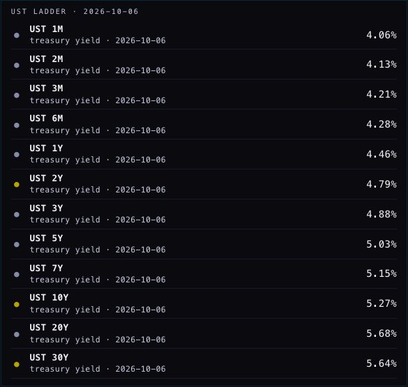
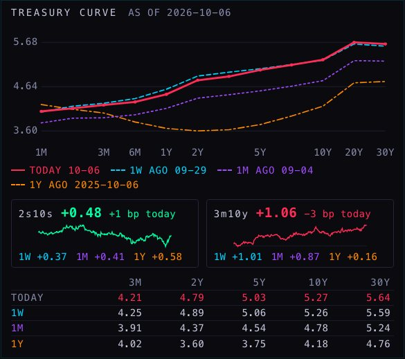
- Today’s line is the day’s colour: green when the 10-year closed above the day before, red when below (it is red here: 5.27 after 5.31). The three older curves each have their own hue and dash, so none is a grey line.
- What the picture says today: a year ago the curve dipped in the middle (2-year 3.60, 10-year 4.18). Now it climbs all the way: 2-year 4.79, 10-year 5.27, 30-year 5.64. From the 2-year out, yields are about a point higher than a year ago; the 3-month bill barely moved (4.21 against 4.02).
- 2s10s is the 10-year minus the 2-year: +0.48 now, +0.37 a week ago, +0.58 a year ago. 3m10y is the 10-year minus the 3-month bill: +1.06 now, +0.16 a year ago. If either goes below zero the tile says INVERTED.
- Source: the Treasury’s own daily curve, already stored since August 2020. Nothing new is read.
4 · MACRO PRINTS, WITH THEIR HISTORY
“macro prints — all of the historical information, do we have it? … It’s only really useful in a historical context. A visual like slider type oscillator thing could be good on that too”
Yes, more than the screen was showing. Every US release since 7 June 2024 is stored with its actual, its consensus and its previous number. The list on the rail only ever printed the newest value. Each indicator now has a strip:
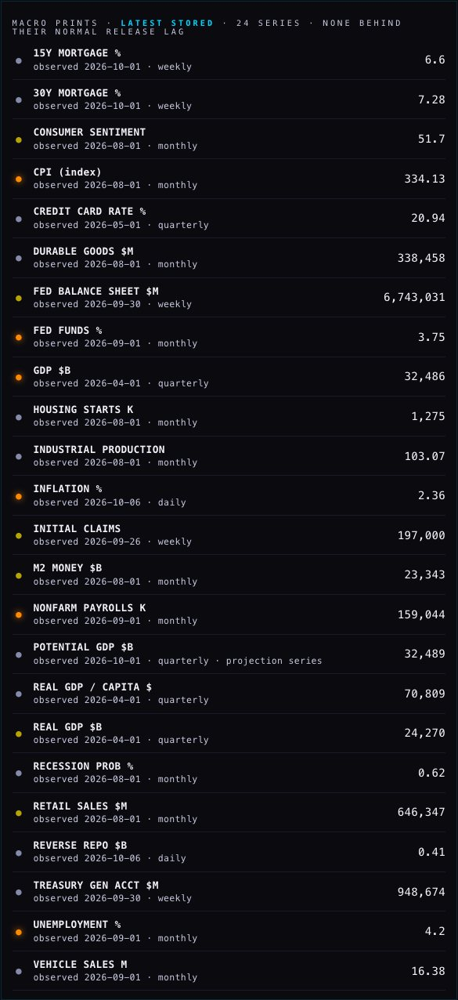
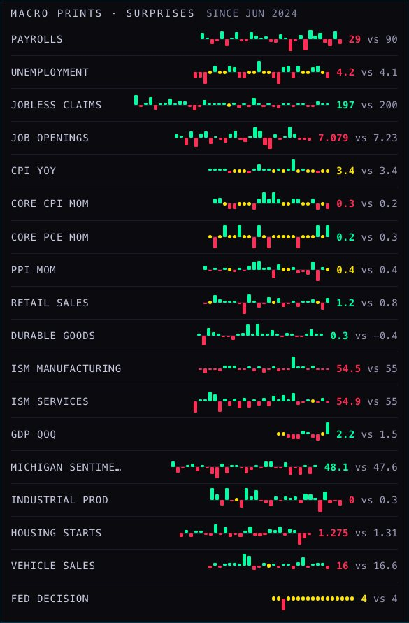
- “Better” follows the room’s one rule. For inflation, unemployment and jobless claims a lower number than expected is the better one. For everything else, stronger is better. So payrolls at 29 against 90 expected is red, and jobless claims at 197 against 200 is green.
- No grey. A print exactly on consensus is a yellow dot on the line, the same yellow the room already uses for “in line”.
- The newest print stands at the right: the actual, then what was expected. Click a strip and its newest print opens in the calendar.
- Indicators nobody forecasts have no strip (money supply, the Fed’s balance sheet, the Treasury’s cash, reverse repo, mortgage rates): there is no consensus to be surprised against.
| WHAT IS STORED | HOW FAR BACK |
|---|---|
| Actual, consensus and previous, every US release | 7 June 2024 → today (24 to 29 monthly prints each; 114 weekly for jobless claims) |
| The level only: payrolls, jobless claims, industrial production, durable goods, vehicle sales, M2, mortgage rates, the Fed’s balance sheet, reverse repo | deep: 1950 to 2003 onward, depending on the series |
| The level only: CPI, unemployment, retail sales, Fed funds, GDP, consumer sentiment, housing starts | shallow: 3 to 10 points, from mid-2025 |
Not done: consensus numbers from before June 2024. The job that fetches them from FMP is written and tested, but the FMP key lives only on Fly, so it has not been run. It only adds older rows; it cannot change a row that is there.
5 · THE MACRO RAIL · A PROPOSAL
“this macro rail … we need a little bit of a rearrangement … we might not need it”
This is a proposal only. Nothing about the rail’s order was decided here. The full mock, card by card with a reason for each, is on its own page: THE MACRO RAIL · KEEP / MERGE / DROP. In one line: six cards become four, and the option of no rail at all is drawn beside it.
6 · PUT / CALL · THE TWO FACTORS
“how do I start tracking this? I don’t trade options, but it’s important to understand how they’re moving … it’s like a two-factor thing — it can move because one or the other moved … What’s the best visual?”
The ratio is two things, so it is shown as two things. Each name carries two small bars on one scale: calls so far today against the calls it usually has by this time of day (green), and puts against its usual puts (red). The upright line is 1×, its usual day. Then the ratio and how far it stands from its own usual, which is exactly the red bar divided by the green one.
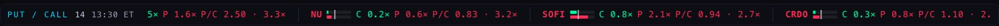
| NAME, 1:30 PM TODAY | CALLS vs USUAL | PUTS vs USUAL | RATIO vs USUAL | WHAT HAPPENED |
|---|---|---|---|---|
| SOFI | 0.8× | 2.2× | 2.7× | Puts came in. Calls were ordinary. Somebody is buying protection. |
| NET | 0.5× | 1.6× | 3.3× | Both moved: calls dried up and puts came in. |
| MU | 2.5× | 2.1× | 0.8× | A very heavy day on both sides, calls heavier. The ratio alone (0.8×) would have hidden that. |
| SPY | 0.85× | 0.96× | 1.14× | A quiet day. The ratio is a touch high only because calls were light. |
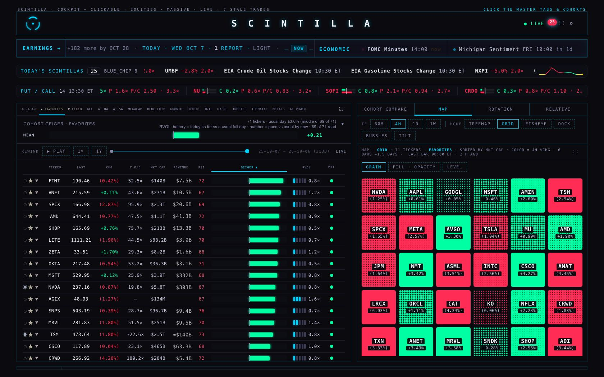
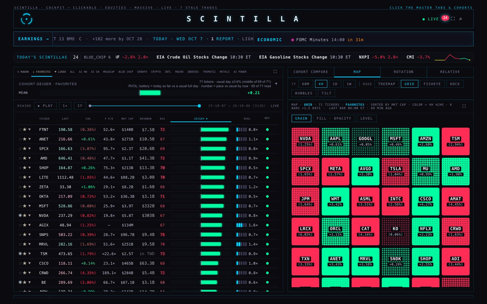
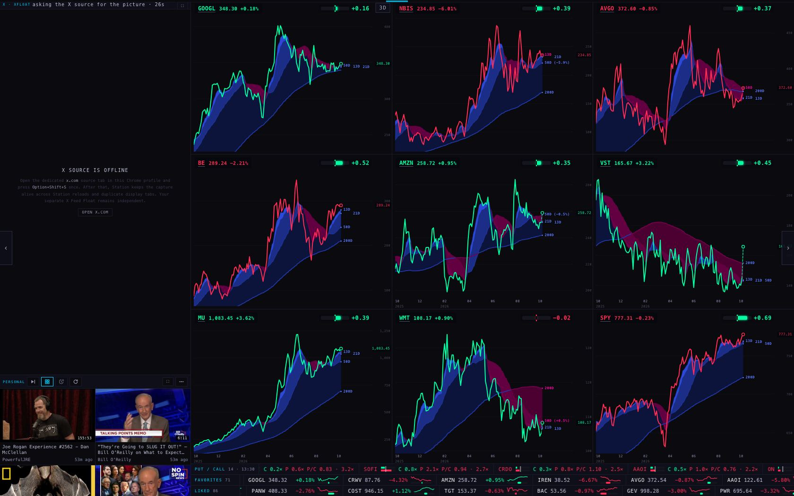
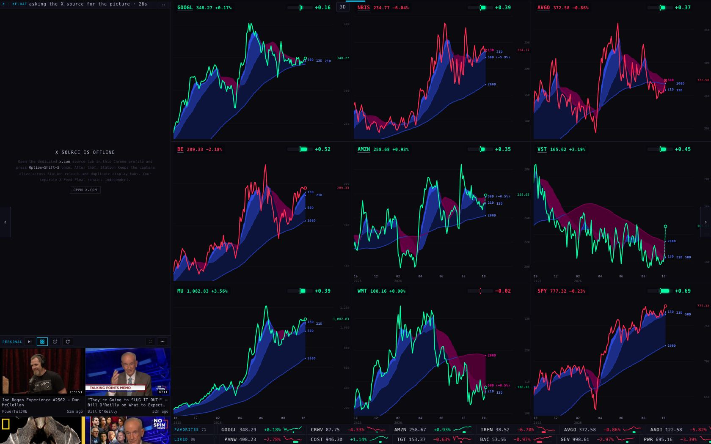
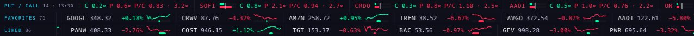
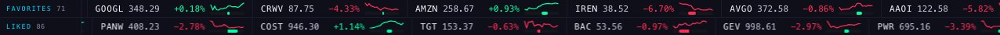
- Names: SPY and QQQ first, then your FAVORITES and RADAR names, the one furthest above its own usual first.
- The flash. A name flashes while its ratio is at 1.5× its own usual or more, through the Hub’s one flash and the Station tape’s own. Measured on the stored days: at 1.5×, between 3 and 15 of about 65 names would be flashing at any moment; today at 1:30 PM it was 14. At 2× it would have been 7.
- Thin names never flash. A name that usually trades under 2,000 contracts by that time of day is shown dimmed and cannot flash. Without that rule a fund trading 10 puts against a usual 0 would light up every day.
- “Usual” is the average of the name’s own last sessions at the same time of day. Only 8 full sessions are stored so far (the counter started on 24 Sep and one day was lost to a logout), so “usual” is a short memory today. It deepens by itself, up to 20 sessions.
- Where the numbers come from. The IBKR counter on this MacBook already lands every name’s call and put volume. What was missing was keeping each name every 15 minutes. That is now written into the function that already makes the minute lines; it stores 26 marks a day per name.
7 · ON A PHONE (390 wide)
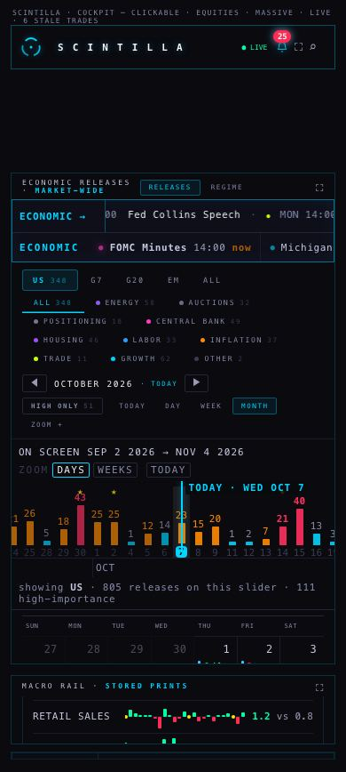
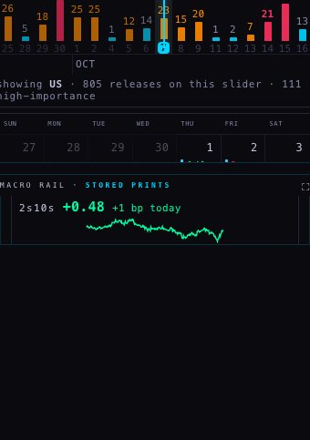
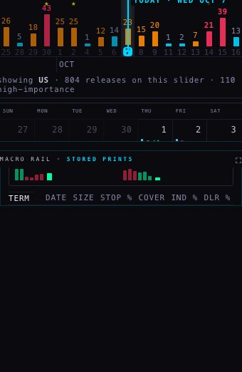
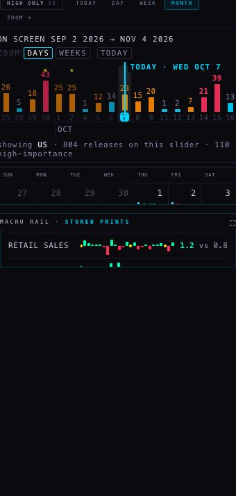
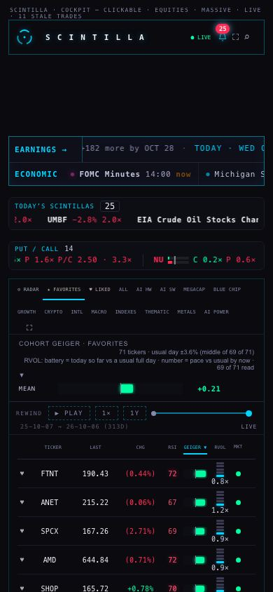
8 · THE TWO NEW TABLES · HOW THEY ARE MADE, AND THE WAY BACK
Both are additive: a new table each, nothing altered. Each rollback was written before its table. Neither has been applied.
A · TREASURY AUCTIONS (Hub branch, supabase/migrations/)
THE TABLE
-- HM2 (7 Oct 2026) · public.treasury_auctions: every nominal Treasury note and bond auction in the seven terms Alan
-- named (2-, 3-, 5-, 7-, 10-, 20-, 30-year), announced and auctioned, from TreasuryDirect's free web service
-- (https://www.treasurydirect.gov/TA_WS/securities/search — no key). Alan, 7 Oct: "There's a 10-year note auction …
-- should we be tracking that? … how much they fill or what? What information do we get?"
-- Additive: one new table, anon read. One row per (cusip, auction date): the announcement first (size, date), then the
-- same row gains the result (the stop, bid-to-cover, who took it) a few minutes after the 13:00 ET deadline.
-- A reopening is filed by Treasury under its remaining life ("9-Year 10-Month"); `term` is the name it trades by ("10-Year").
-- Writer: supabase/functions/treasury-auctions (mapping in ./auctions.mjs, tests/hm2-macro.test.mjs).
-- First fill: deliverables/20261007/hm2-macro/data/treasury-auctions-load.sql (712 rows, 9 Jan 2018 → 8 Oct 2026).
-- Rollback: 20261007_hm2_treasury_auctions_ROLLBACK.sql
create table if not exists public.treasury_auctions (
cusip text not null,
auction_date date not null,
term text not null check (term in ('2-Year','3-Year','5-Year','7-Year','10-Year','20-Year','30-Year')),
security_term text, -- as Treasury files it: '9-Year 10-Month' for a reopened 10-year
security_type text not null check (security_type in ('Note','Bond')),
reopening boolean,
announcement_date date,
issue_date date,
maturity_date date,
closing_time_et text, -- the competitive deadline, New York time: '01:00 PM'
offering_amount numeric, -- dollars offered to the public
high_yield numeric, -- the stop, in percent (null until the result is printed)
median_yield numeric,
low_yield numeric,
coupon numeric,
bid_to_cover numeric,
competitive_accepted numeric, -- dollars awarded to competitive bidders
indirect_accepted numeric,
direct_accepted numeric,
dealer_accepted numeric,
total_accepted numeric,
total_tendered numeric,
soma_accepted numeric, -- the Fed's own add-on, outside the public offering
indirect_pct numeric, -- share of competitive_accepted, 0-100
direct_pct numeric,
dealer_pct numeric,
status text not null check (status in ('announced','auctioned')),
source text not null default 'TreasuryDirect TA_WS',
source_updated_at timestamp, -- Treasury's own updatedTimestamp (New York wall clock)
fetched_at timestamptz not null default now(),
primary key (cusip, auction_date)
);
create index if not exists treasury_auctions_term_date_idx on public.treasury_auctions (term, auction_date desc);
create index if not exists treasury_auctions_date_idx on public.treasury_auctions (auction_date desc);
alter table public.treasury_auctions enable row level security;
drop policy if exists treasury_auctions_anon_read on public.treasury_auctions;
create policy treasury_auctions_anon_read on public.treasury_auctions for select to anon using (true);
grant select on public.treasury_auctions to anon;THE WAY BACK
-- Rollback of 20261007_hm2_treasury_auctions.sql and 20261007_hm2_treasury_auctions_cron.sql (HM2, 7 Oct 2026).
-- Written BEFORE the migration. Removes the two schedules (if they were ever created), the policy and the table.
-- Nothing else reads or depends on this table: the Hub's auctions card prints "not stored yet" when it is absent.
do $$ begin
if exists (select 1 from pg_extension where extname = 'pg_cron') then
perform cron.unschedule(jobname) from cron.job where jobname in ('treasury-auctions-results', 'treasury-auctions-daily');
end if;
end $$;
drop policy if exists treasury_auctions_anon_read on public.treasury_auctions;
drop table if exists public.treasury_auctions;THE TWO SCHEDULES (staged; only after the function is deployed)
-- HM2 (7 Oct 2026) · the two schedules that keep public.treasury_auctions current. STAGED: apply only after the
-- function is deployed (supabase functions deploy treasury-auctions --no-verify-jwt --project-ref wadinxqplrggagkvrdag).
-- Same shape as the treasury-curve jobs (scin_record + net.http_post, no token: the function reads a free source and
-- writes one table by name with its own service role).
-- treasury-auctions-results every 5 min 17:00-17:55Z Mon-Fri = 13:00-13:55 ET in summer (12:00-12:55 ET in winter —
-- the 18Z hour is covered too) — the result lands about three minutes after the deadline.
-- treasury-auctions-daily 12:10Z Mon-Fri — new announcements (sizes) and anything a results run missed.
-- NEIGHBOURS CHECKED: no other job writes this table; treasury-curve-daily (08:35Z) and treasury-curve-evening
-- (21-23Z) write treasury_rates only; fmp-economic (05:47/17:47Z, hourly :05) writes econ_calendar only. The 17:47Z
-- fmp-economic run and a 17:45Z auctions run are two different functions on two different sources.
-- Rollback: 20261007_hm2_treasury_auctions_ROLLBACK.sql (unschedules both).
select cron.schedule('treasury-auctions-results', '*/5 17-18 * * 1-5', $$
select scin_record('treasury-auctions-results', 'https://wadinxqplrggagkvrdag.supabase.co/functions/v1/treasury-auctions',
net.http_post(url := 'https://wadinxqplrggagkvrdag.supabase.co/functions/v1/treasury-auctions?days=10',
headers := '{"Content-Type":"application/json"}'::jsonb, body := '{}'::jsonb, timeout_milliseconds := 60000))
$$);
select cron.schedule('treasury-auctions-daily', '10 12 * * 1-5', $$
select scin_record('treasury-auctions-daily', 'https://wadinxqplrggagkvrdag.supabase.co/functions/v1/treasury-auctions',
net.http_post(url := 'https://wadinxqplrggagkvrdag.supabase.co/functions/v1/treasury-auctions?days=45',
headers := '{"Content-Type":"application/json"}'::jsonb, body := '{}'::jsonb, timeout_milliseconds := 60000))
$$);B · EVERY NAME’S OPTION VOLUME, EVERY 15 MINUTES (writer branch, db/migrations/0020)
THE TABLE AND THE “TODAY vs USUAL” VIEW
-- 0020 · HM2, 7 Oct 2026 · every name's option volume at each quarter-hour, and today against its usual day.
--
-- Alan, 7 Oct: "how do I start tracking this? I don't trade options, but it's important to understand how they're
-- moving … it's like a two-factor thing — it can move because one or the other moved."
--
-- WHAT WAS MISSING. The reader already lands every name's running call and put totals in ibkr_option_volume (9.8
-- million readings since 24 Sep), and putcall-aggregate turns them into minute LINES for the two headline scopes,
-- the cohorts and the sectors. Nothing kept the NAMES at a fixed clock time, so "calls today against calls on a
-- usual day by now" could not be asked without re-reading millions of rows.
--
-- WHAT THIS ADDS (additive: one table, one view, nothing altered):
-- public.ibkr_option_volume_15m one row per name per quarter-hour mark of the session (09:45 … 15:45 New York,
-- and the last minute as 16:00). Written by putcall-aggregate, same as-of rule as
-- the minute lines (the newest reading at or before the mark, at most 15 min old).
-- public.putcall_names_now the newest mark, each name against the average of its own last 20 sessions at
-- the SAME clock time (at least 3 needed):
-- calls_x = calls so far today ÷ calls it usually has by now
-- puts_x = puts so far today ÷ puts it usually has by now
-- ratio_x = today's put/call ÷ its usual put/call (= puts_x ÷ calls_x, exactly)
-- thin = usually under 2,000 contracts by this time — shown, never flashed
--
-- NEIGHBOURS CHECKED TOGETHER: ibkr_putcall_minute, putcall_daily, putcall_gap_daily, putcall_vs_cboe and their
-- crons (270-273) are not read or written by anything here. ibkr-ingest (the Mac's only door) is unchanged: this
-- table is filled inside the database, so no new write path opens on Alan's MacBook. A market holiday on a
-- weekday would store marks with no volume; the view ignores a session in which a name traded nothing.
-- Rollback: 0020_ibkr_option_volume_15m.rollback.sql. History: db/backfill/0020_ibkr_option_volume_15m_backfill.sql.
create table if not exists public.ibkr_option_volume_15m (
ticker text not null,
mark_ts timestamptz not null, -- the quarter-hour this reading stands for
session_et date not null,
hhmm text not null, -- New York clock: '09:45' … '15:45', '16:00' = the day
call_vol double precision, -- running total for the session at the mark
put_vol double precision,
put_call double precision, -- null with a reason, never a zero standing in
put_call_absent text,
reading_age_ms integer, -- how old the reading used was at the mark
source text not null default 'IBKR',
formula_version text not null default 'pc-1.0.0',
computed_at timestamptz not null default now(),
primary key (ticker, mark_ts)
);
create index if not exists ibkr_option_volume_15m_mark_idx on public.ibkr_option_volume_15m (mark_ts);
create index if not exists ibkr_option_volume_15m_clock_idx on public.ibkr_option_volume_15m (ticker, hhmm, session_et desc);
alter table public.ibkr_option_volume_15m enable row level security;
drop policy if exists ibkr_option_volume_15m_anon_read on public.ibkr_option_volume_15m;
create policy ibkr_option_volume_15m_anon_read on public.ibkr_option_volume_15m for select to anon using (true);
grant select on public.ibkr_option_volume_15m to anon;
create or replace view public.putcall_names_now as
with cur_mark as (
select max(mark_ts) as mark_ts from public.ibkr_option_volume_15m
), cur as (
select n.* from public.ibkr_option_volume_15m n join cur_mark m on n.mark_ts = m.mark_ts
), hist as (
select h.ticker, h.call_vol, h.put_vol,
row_number() over (partition by h.ticker order by h.session_et desc) as rn
from public.ibkr_option_volume_15m h
join cur c on c.ticker = h.ticker and h.hhmm = c.hhmm and h.session_et < c.session_et
and h.session_et >= c.session_et - 60 -- 20 sessions sit inside 60 days; the bound keeps a year of marks out of every read
where h.call_vol is not null and h.put_vol is not null and (h.call_vol + h.put_vol) > 0
), usual as (
select ticker, avg(call_vol) as usual_call_vol, avg(put_vol) as usual_put_vol, count(*)::int as usual_sessions
from hist where rn <= 20 group by ticker
)
select c.ticker, c.session_et, c.mark_ts, c.hhmm, c.call_vol, c.put_vol,
round(u.usual_call_vol::numeric, 0) as usual_call_vol, round(u.usual_put_vol::numeric, 0) as usual_put_vol, u.usual_sessions,
round((c.call_vol / u.usual_call_vol)::numeric, 2) as calls_x,
round((c.put_vol / u.usual_put_vol)::numeric, 2) as puts_x,
round((c.put_vol / c.call_vol)::numeric, 3) as put_call,
round((u.usual_put_vol / u.usual_call_vol)::numeric, 3) as usual_put_call,
round(((c.put_vol / c.call_vol) / (u.usual_put_vol / u.usual_call_vol))::numeric, 2) as ratio_x,
(u.usual_call_vol + u.usual_put_vol) < 2000 as thin
from cur c join usual u using (ticker)
where u.usual_sessions >= 3 and c.call_vol > 0 and c.put_vol is not null and u.usual_call_vol > 0 and u.usual_put_vol > 0;
grant select on public.putcall_names_now to anon;THE WAY BACK
-- Rollback of 0020_ibkr_option_volume_15m.sql (HM2, 7 Oct 2026). WRITTEN BEFORE THE MIGRATION. -- Drops the view and the table. Nothing else reads them: the put/call strip (Hub dashboard, Station tape area) -- simply disappears when putcall_names_now cannot be read, and putcall-aggregate reports `names_error` in its -- answer and carries on writing its minute lines exactly as before (aggregate-run.mjs never fails a run on it). -- To take the function back as well: redeploy branch fix/putcall-20260928 @089a73d (the version live on 7 Oct). drop view if exists public.putcall_names_now; drop policy if exists ibkr_option_volume_15m_anon_read on public.ibkr_option_volume_15m; drop table if exists public.ibkr_option_volume_15m;
9 · WHAT COULD BE WRONG
- “Usual” for put/call rests on 8 sessions. One odd day moves it. Read the multiples as rough until about 20 sessions are stored (late October).
- Early in the day the multiples are jumpy. At 9:45 a name has traded little, so a small number is divided by a small number.
- The auction card’s colours are relative to six auctions. Six weak auctions in a row make an ordinary one look green.
- A release whose units the feed changed (thousands one month, millions the next) is corrected by the room’s existing rule before the strip is drawn; a release that rule cannot read is left out of the strip rather than guessed.
- The pictures of the auctions card and the put/call tape use real numbers through a stand-in. Those two tables do not exist yet, so in the test browser the two reads were answered from files holding exactly what the tables will hold (the Treasury’s rows; the view’s own SQL run read-only on the stored readings). Everything else on screen was read live.
10 · WHAT WAS NOT DONE
- Nothing was deployed and no table was created or written. The slider, the curve and the strips need no new table and would work the moment the branch is live; the auctions card and the put/call tape wait for their tables.
- Consensus history before June 2024 was not fetched (the key lives on Fly; the job is ready).
- The tail is not shown: no free source for the pre-auction yield.
- The rail was not rearranged beyond replacing the ladder with the picture and adding the two cards. The rest is the proposal.
- The call-heavy mirror of the flash (a ratio at two-thirds of its usual or less) was not built: you asked for 1.5×. Today 7 names stood there.
- The Station’s put/call row reads the list straight from the database mirror, like the tapes’ own lists. An earlier note preferred such data to come through the chart API; that route was not built.
11 · TESTS
| WHERE | BEFORE | AFTER | NEW FAILURES |
|---|---|---|---|
| Hub | 2,181 tests · 7 fail | 2,203 tests · 7 fail | none: the same 7 names |
| Station | 1,108 tests · 27 fail | 1,114 tests · 27 fail | none: the same 27 names |
| Put/call writer | 110 tests · 0 fail | 116 tests · 0 fail | none |
Failing tests are compared by name against the same commit without this work, not by count. Four existing tests were re-pinned on purpose, each with a dated note saying why and naming what stands beside it: the Hub’s count of calendar reads goes from two to three (the surprise strips’ one read, behind its own switch; the economic room’s own module still holds two); the writer’s close now writes five tables; the Station’s list of controls gains one switch; the Station’s list of direct reads gains one list of names with volume counts (no price).
12 · FOR THE COORDINATOR · THE ORDER
NOTHING BELOW HAS BEEN RUN. Each step is independent of the others unless it says so.
A · WORKS WITH NO NEW TABLE (the slider, the curve picture, the surprise strips)
merge hub/hm2-macro-20261007 → rebuild the trial copy → deploy as usual.
To leave any of it out: HM2_ON = false (everything) or HM2_PC_ON = false (the put/call tape only).
After a merge that touches index.html: python3 deliverables/20261007/hm2-macro/tools/inject-hm2.py --remove
on the merged page, then the same without --remove, then build-trial.py.
B · TREASURY AUCTIONS (the card says "not stored yet" until step 2)
1. supabase db query --linked -f supabase/migrations/20261007_hm2_treasury_auctions.sql
2. supabase db query --linked -f deliverables/20261007/hm2-macro/data/treasury-auctions-load.sql (712 rows)
check: select status, count(*), max(auction_date) from treasury_auctions group by 1; → auctioned 711 · announced 1
3. supabase functions deploy treasury-auctions --no-verify-jwt --project-ref wadinxqplrggagkvrdag
check: curl -s -X POST 'https://wadinxqplrggagkvrdag.supabase.co/functions/v1/treasury-auctions?days=10&dry=1' → ok true, rows > 0, wrote 0
4. supabase db query --linked -f supabase/migrations/20261007_hm2_treasury_auctions_cron.sql
way back: supabase db query --linked -f supabase/migrations/20261007_hm2_treasury_auctions_ROLLBACK.sql
C · PUT / CALL (repo scintilla, branch ibkr/hm2-putcall-names-20261007; the tape is absent until step 2)
1. supabase db query --linked -f db/migrations/0020_ibkr_option_volume_15m.sql
2. supabase db query --linked -f db/backfill/0020_ibkr_option_volume_15m_backfill.sql (nine sessions, one statement each)
check: select count(*), count(distinct session_et) from ibkr_option_volume_15m; select count(*) from putcall_names_now;
3. supabase functions deploy putcall-aggregate --project-ref wadinxqplrggagkvrdag (from that branch)
check, inside the session, after the next quarter-hour: select max(mark_ts) from ibkr_option_volume_15m;
the function's own answer now carries name_marks and name_rows; names_error means the table was not there.
way back: redeploy branch fix/putcall-20260928 @089a73d · then db/migrations/0020_ibkr_option_volume_15m.rollback.sql
Station: station/hm2-putcall-strip-20261007 ships with the row OFF. On Alan's go: PC_TAPE_DEFAULT_ON = true
(or he taps "put/call · off" in the controls; it is remembered in the browser).
D · CONSENSUS HISTORY BEFORE JUNE 2024 (optional; the strips work without it)
on a throw-away machine of scintilla-massive-stocks-batch, with scripts/hm2-econ-calendar-backfill.mjs copied in:
node /app/hm2-econ-calendar-backfill.mjs 2015-01-01 2024-06-06 > econ-calendar-backfill.json
node scripts/hm2-econ-calendar-backfill.mjs --sql < econ-calendar-backfill.json > econ-calendar-backfill.sql (on the Mac)
supabase db query --linked -f econ-calendar-backfill.sql (insert … on conflict do nothing: it can only add)
PAGE SPECS
Pictures: headless Chromium, one page at a time, every non-GET request blocked and counted. BEFORE pictures are the live Hub and Station. AFTER pictures are the live address answered with the branch’s page (tools/shoot.mjs --map), so every read on screen is the real one, except the two tables that do not exist yet (--data), answered from data/treasury-auctions.json (the Treasury’s own rows, read 7 Oct 13:26 ET) and data/putcall-names-now-20261007-1330.json (the view’s SQL run read-only over the stored readings).
The Hub block lives in tools/hm2-block.js and tools/hm2-style.css and is placed by tools/inject-hm2.py through seven one-line hooks; --remove gives the page back to the byte. It sits above the economic room’s own module, never inside it: that module is still pinned to three tables and two calendar reads. The slider asks through the room’s one window reader; the strips add one read of their own, recorded in the room’s guard test with its neighbours. Nothing in the block reads or paints unless its own element is on the page, and the room’s mount never waits on it. One switch, HM2_ON; the put/call tape has its own, HM2_PC_ON. The Station row has PC_TAPE_DEFAULT_ON = false.
Sources: econ_calendar (FMP economic calendar, existing job) · treasury_rates (the Treasury’s daily par curve, existing job) · treasury_auctions (TreasuryDirect TA_WS, new) · ibkr_option_volume_15m and putcall_names_now (IBKR option volume, new, written by putcall-aggregate).